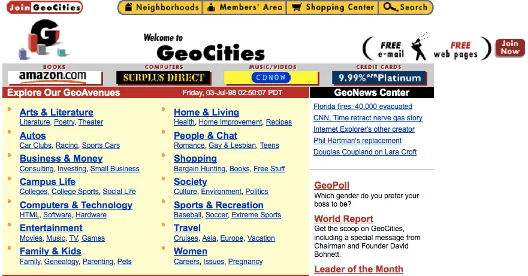

GeoCities
A town of millions of unfinished homepages, and the strangers who stayed up on the last night to carry out the furniture.

In 1994, two men built a neighborhood. There were no houses. There were homepages. David Bohnett and John Rezner called their company Beverly Hills Internet, and they gave strangers street addresses in cities that did not exist. [S1]
You could move to SunsetStrip if you had a band. To Area51 if you had theories. To Heartland if you had a family album nobody had asked to see. Every address ended in a number, like a lot, like a plot of land you had been assigned by a machine. The company soon renamed itself GeoCities, and for a while the metaphor held: the web was a place, and this was a town anyone could build in. [S1]
Millions did. The service hosted millions of user-built pages, and by the late 2000s the count was reported in the tens of millions. Each one was a person announcing a self: MIDI files that played without permission, tiled starfields, construction gifs on pages that would never be finished. [S1]
Yahoo! bought the town in 1999, in a stock deal reported at the time at roughly 3.6 billion US dollars. Whatever the true number, it bought the right to millions of unfinished personal homepages, and in hindsight that is the revealing part: the price was never about the pages. It was about the people who made them. [S1]
The people left. Neighborhoods emptied the way real ones do, slowly and then at once. In April 2009 Yahoo! announced it would close the US service, and on October 26, 2009, it did. [S1]
The night it happened, one Hacker News user could not sleep. The thread, posted the day of the shutdown, is titled "I couldn't sleep, so I backed up GeoCities." That is the whole story of digital archaeology in one sentence: institutions delete, and individuals stay up late. [S2]
The salvage became a flood. Within a year a torrent was circulating, described at the time as about a terabyte of GeoCities, offered to anyone who would keep it. Not a backup ordered by anyone. A rescue performed by whoever showed up. [S3]
Then came the afterlife. In 2017 someone launched Neocities, a modern reboot that hands out free personal pages to this day, because the idea of building your own lot on the web refused to die with the original. [S4] In 2022 people were still writing love letters to GeoCities sites, still visiting the ruins, still mistaking the rubble for a golden age. It was not a golden age. It was an ordinary age in which the web had a place for people who had nothing to sell. [S5]
Today the neighborhoods exist as archives and anecdotes. The tens of millions of lots are mostly gone. What survives, survives because strangers, on the last night, chose to hoard a stranger's homepage. That is not nostalgia. That is a will, and the heirs never met the dead.
Remembered: a town of millions of unfinished pages, and the volunteers who carried out the furniture.
Sources
- S1: Wikipedia: GeoCities -- https://en.wikipedia.org/wiki/GeoCities
- S2: Hacker News (2009-10-26) -- https://news.ycombinator.com/item?id=903567
- S3: Hacker News (2010-10-27) -- https://news.ycombinator.com/item?id=1840481
- S4: Hacker News (2017-01-20) -- https://news.ycombinator.com/item?id=13445181
- S5: Hacker News (2022-08-01) -- https://news.ycombinator.com/item?id=32313574
PROVENANCE
| Exhibit no.: | 008 |
| Data-source mode: | facts: seed-corpus; wikipedia-unreachable; wayback-cdx-unreachable; hn-algolia (live, subject query) |
| Illustration: | sourced image -- Bing image search, retrieved 2026-08-29 |
| Found via: | bing-image-search |
| Image url: | https://glitchback.com/wp-content/uploads/2026/03/geocities-retro-web-homepage.webp |
| Generated: | 2026-08-29 |
| Generator: | deadweb-pipeline 0.1 (deterministic scaffold) |
| Editorial pass: | web-product-engineer (editorial pass 1) |
| Status: | published |
| Source page: | https://glitchback.com/geocities-wild-west-early-internet/ |
SOURCES
- Wikipedia: GeoCities -- https://en.wikipedia.org/wiki/GeoCities
- Hacker News thread: "Tell HN: My 'mystery project': I couldn't sleep, so I backed up GeoCities" (2009-10-26) -- https://news.ycombinator.com/item?id=903567
- Hacker News thread: "The Geocities Torrent (~1TB of awesomeness)" (2010-10-27) -- https://news.ycombinator.com/item?id=1840481
- Hacker News thread: "Neocities: Free, modern Geocities reboot" (2017-01-20) -- https://news.ycombinator.com/item?id=13445181
- Hacker News thread: "A Love Letter to Geocities Sites" (2022-08-01) -- https://news.ycombinator.com/item?id=32313574